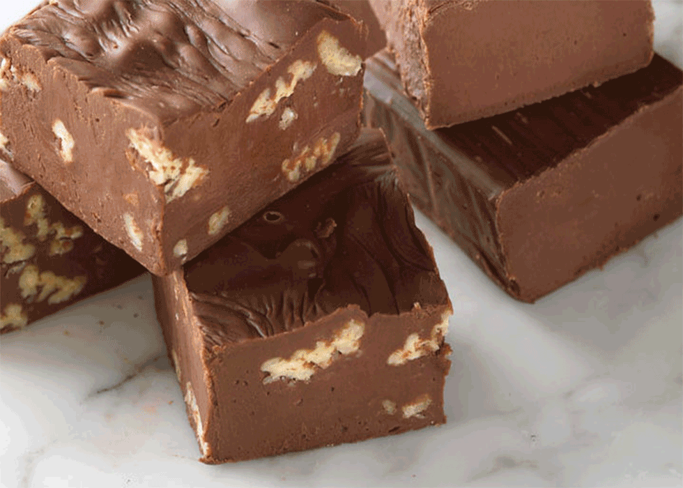

Homemade chocolate

Sastojci:
100 g kakao maslaca (možete koristiti i kokosovo ulje kao zamjenu)
6 žlica kakao praha (bez šećera)
4 žlice meda (ili javorovog sirupa za vegansku opciju)
1 žličica ekstrakta vanilije
Prstohvat soli
Opcionalni dodaci:
Sjeckani orašasti plodovi (npr. bademi, lješnjaci, orasi)
Suho voće (npr. brusnice, grožđice)
Kokosove pahuljice
Pripremite kalup za čokoladu ili mali lim za pečenje obložen papirom za pečenje.
Kakao maslac otopite na laganoj vatri u posudi s dvostrukim dnom ili u posudi iznad lonca s kipućom vodom (banja marija). Pazite da ne zagrije previše kako se ne bi uništili hranjivi sastojci.
Kad se kakao maslac potpuno otopi, maknite posudu s vatre i dodajte kakao prah, med, ekstrakt vanilije i prstohvat soli. Dobro promiješajte dok smjesa ne postane glatka i sjajna.
Ako želite dodati orašaste plodove, suho voće ili kokosove pahuljice, sada je pravo vrijeme da ih umiješate u smjesu.
Izlijte smjesu u pripremljeni kalup ili lim za pečenje. Ravnomjerno rasporedite smjesu i poravnajte površinu.
Stavite kalup ili lim u hladnjak na najmanje 1-2 sata, ili dok se čokolada potpuno ne stvrdne.
Kad je čokolada potpuno stvrdnuta, izvadite je iz kalupa ili lima i narežite na komadiće željene veličine.
Domaću čokoladu čuvajte u hermetički zatvorenoj posudi u hladnjaku kako bi ostala svježa i čvrsta.
Uživajte u svojoj domaćoj čokoladi!
Dobar tek!